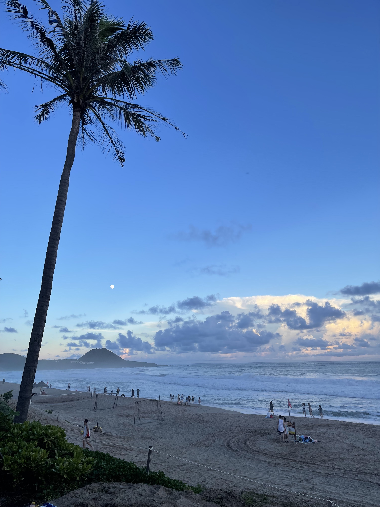
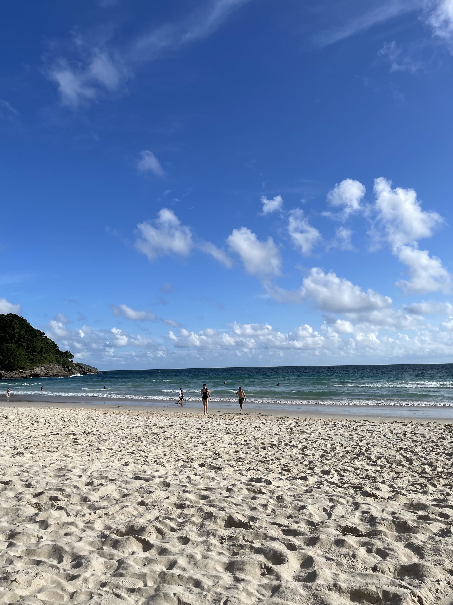
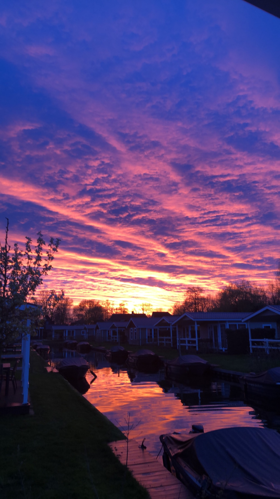
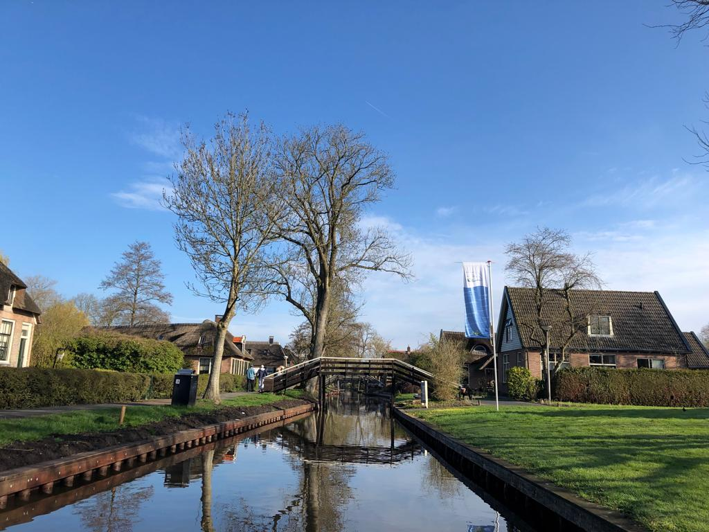
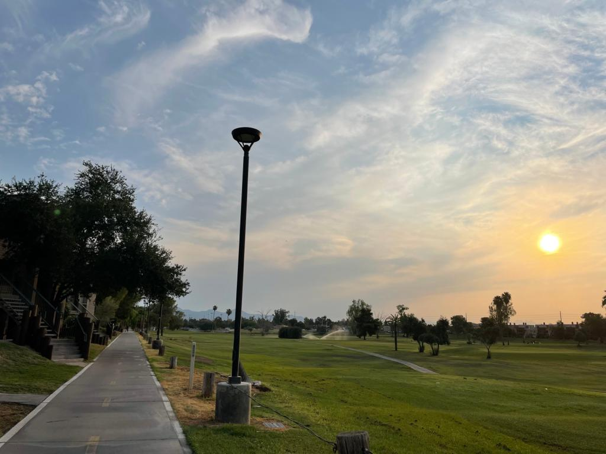
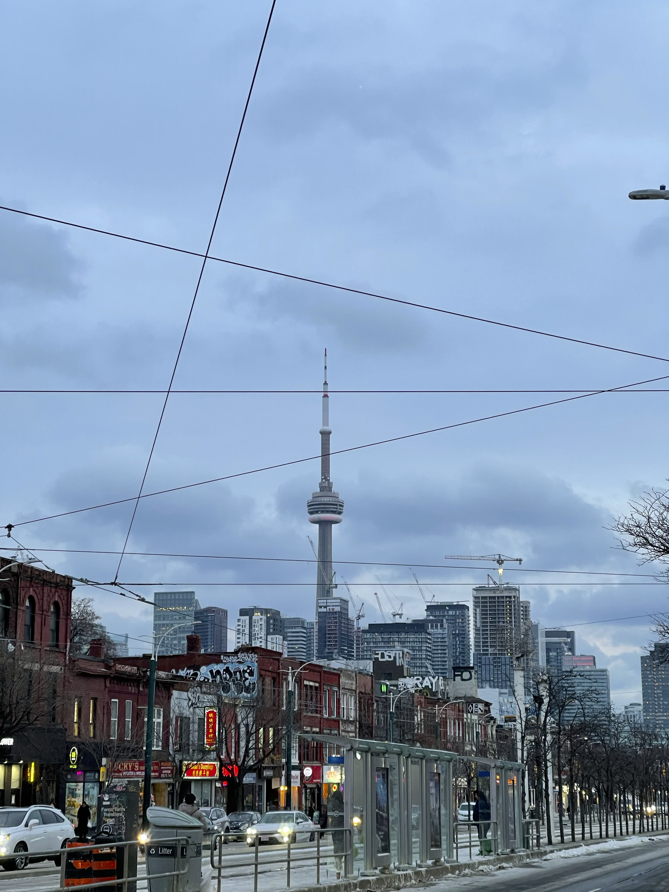

Experience & Future Career Aspirations
This personal web application was developed through Figma Wire Framing, HTML5, and CSS.
Future Career Aspirations: Data Analytics, Digital Marketing Analyst, Information Technology
My ResumeTravelling
My Passion for Travelling
Exploring the world and experiencing diverse cultures has been a source of joy and inspiration in my life. My passion for travelling has taught me many important things such as social norms, cultrural sensitivty/diversity, and breaking stereotypes. I was lucky enough to have travelled to many different cultures and adapt to enhance my resilience, which has equipped me to not only navigate through unfamiliar situations, but also expose myself to new ideologies, religions, and ways of doing. Breaking stereotypes, specifically travelling to different parts of Asia, Europe, and North America has allowed me to further enhance my understanding of Geography and cultural traditions. Below are some of the amazing & beautiful places I've had the privilege to visit
Asia:
-
Taiwan - Taipei City (Home Country) China - Beijing, Shanghai, ShenZhen, Hong Kong City
- Japan - Okinawa, Hokkaido
-
Thailand - Bangkok, Phuket, Pattaya
-
South Korea - Seoul, Jeju
- Malaysia - Kota Kinabalu
- Phillipines - Manilla
Europe:
-
Netherlands - Amsterdam
- France - Paris
- United Kingdom - London
-
Belgium - Brussels
North America:
-
United States Of America - Washington, California, Oregon, Hawaii, Arizona

-
Canada - Vancouver BC, Toronto
- Mexico - Cabo